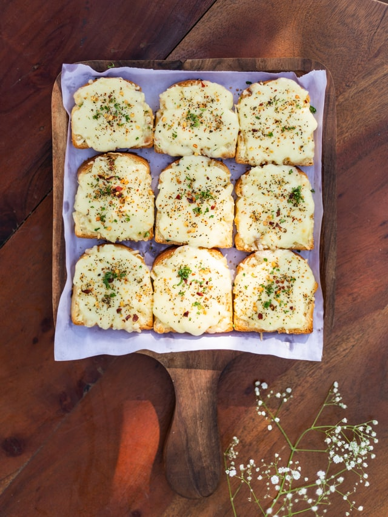

About Us
A Sandwich, Some Facts:
- The typical grilled cheese sandwich contains about 291 calories.
- The world record for eating grilled cheese is 47 sandwiches in 10 minutes.
- 3/4 of people who buy sliced cheese make at least one grilled cheese per month.
- In 2004, the online casino GoldenPalace.com paid $28,000 for a half-eaten grilled cheese with the likeness of the Virgin Mary depicted in the “burn” pattern.
The average grilled cheese has:
- 410 calories
- 37g of carbs
- 23g of fat
- 14g of protein

History of the Grilled Cheese
From wikipedia: The cheese dream, an open-faced grilled cheese sandwich, became popular in the U.S. during the Great Depression. U.S. government cookbooks describe Navy cooks broiling "American cheese filling sandwiches" during World War II. In the 1960's, the sandwich received another slice of bread to make it a closed face sandwich. It would eventually receive the name of "grilled cheese" around the end of the 60's.